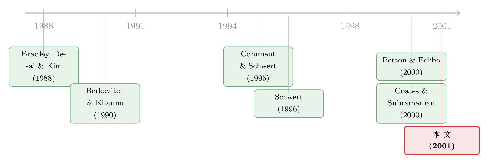

「锁门」的并购：当一道把对手关在门外的期权，反而替股东赚了钱
本文读的是 Burch (2001, Journal of Financial Economics)：人人都说锁定期权（lockup option）是目标公司管理层用来「赶走对手、私相授受」的自肥工具，可 2,067 桩并购的数据却给出一个反直觉的结论——带锁定期权的交易，目标股东的公告收益与整体收益反而更高，出价方的公告收益更低。证据更像是「管理层在用它增强谈判筹码」，而不是「拿股东的钱给自己买好处」。
1 引言：一份被法院判死、又被股东「悼念」的期权
1993 年，维亚康姆（Viacom）和 QVC 为了争夺派拉蒙（Paramount）打得不可开交。派拉蒙的管理层把一份锁定期权（lockup option）塞给了维亚康姆：维亚康姆有权按谈判好的收购价，买下派拉蒙 2,400 万股库存股（彼时在外流通股约 1.2 亿股）。这份期权的妙处在于——一旦 QVC 最终赢得派拉蒙，维亚康姆可以把这批低价拿到的股票，按 QVC 更高的出价倒手卖出。换句话说，QVC 出价越高，维亚康姆赚得越多。维亚康姆的董事长放话说，「除了核弹，没什么能拆散这笔交易」。
故事的结局是：QVC 把官司打到了特拉华州最高法院，1994 年，法院判维亚康姆的这份锁定期权无效。《华尔街日报》随后写道，虽然「现在评估[这一判决]的长期影响还为时过早」，但「[锁定期权]之死对股东可能是好消息」——因为目标公司的管理层「将更难安排那些损人利己的交易」（Steinmetz, 1994）。
这就是关于锁定期权的传统智慧（conventional wisdom）：它是自利的管理层用来扼杀竞争、亲手挑选买家、顺便给自己捞一份雇佣合同的工具，最终受损的是目标股东。逻辑听起来天衣无缝：竞争抬高溢价，而锁定期权恰恰消灭竞争，那它当然损害股东。
但这里藏着一个被忽略的环节：「消灭竞争」和「损害股东」之间，并不存在一条理所当然的等号。Burch (2001) 这篇文章，正是从这条被默认掉的等号下手。
接着，一个自然的问题是：如果锁定期权真这么坏，为什么带它的交易，目标股东反而赚得更多？
2 先把「锁定期权」拆开看：它到底锁住了什么
要理解这场反转，得先弄明白锁定期权的机械原理。
典型的协议收购里，目标公司和谈判好的收购方（称作出价方 1，bidder 1）签一份合并协议，约定收购溢价等条款，其中可能包含一份锁定期权。但合并不会立刻完成——通常要等几个月，处理监管和各种手续。正是在这段空窗期，一个搅局的第三方（出价方 2，bidder 2）可能跳出来报价。
这时锁定期权就启动了：出价方 1 有权按原先谈定的每股价格，买下目标的一大块库存股（或授权未发行股）。然后它可以按出价方 2 的更高报价，把这些股票卖给出价方 2（或卖回目标）。于是这份期权的收益随着出价方 2 抬价而水涨船高——它给了出价方 1 一个出价方 2 永远够不到的成本优势。
那么锁定期权有多大？文中样本里，锁定期权的规模均值 20%、中位数 18%（按行权后持股占总股本计），而对照之下，持有立足股的出价方平均立足股（toehold）只有 10% 到 13%（Bradley et al., 1988；Jarrell and Poulsen, 1989）。
这里要先把锁定期权和分手费（breakup fee）区分开。分手费是一笔交易因故终止时要付给出价方的固定金额；本文的「锁定期权」不含分手费。作者说，控制分手费之后，锁定期权的结论依然稳健。（关于分手费本身的两副面孔，可参见《分手费，到底是给股东上锁，还是替股东撑腰？》与《「分手费」到底是锁门的链条，还是请客的请柬？》。）
3 真正关键的一步：锁定期权，其实是一份「廉价的立足股」
读到这里，本文最核心的那个洞见才浮出水面。锁定期权，可以被理解成立足股的一个不完美但更便宜的替代品。
为什么这么说？先看立足股。Ravid and Spiegel (1999) 指出，当预期会有对手出现时，出价方会出于「保险」目的去买立足股。立足股能让你在竞标战中更有底气——Burkart (1995)、Bulow et al. (1998)、Singh (1998) 都证明，立足股会让出价方更激进地抬价；Betton and Eckbo (2000) 的实证也印证了这一点：单一出价情形下平均立足股高达 19%，而一旦有对手跳出来报价，这个均值就掉到 5%——对手显然很清楚，跟一个握有大额股权的人对掐，胜算几何。
但立足股有它的「预谈判成本」：买立足股会抬高目标的盘前价格（Ravid and Spiegel, 1999），会向竞争对手通风报信、向目标管理层暴露意图、向目标股东泄露一个「高估值」的信号（Chowdhry and Jegadeesh, 1994）。Schwert (1996) 更指出，盘前的股价 runup 几乎不会被盘后涨幅替代，它是一笔实打实落到出价方头上的额外成本。
然后，关键的一步来了：锁定期权恰好提供了立足股的「保险」功能，却没有它的预谈判成本。 因为锁定期权是作为最终合并协议的一部分谈出来的——它给了持有人一个权利，恰好在对手真的来搅局时，迅速买进一块立足股。它把「保险」延迟到了真正需要的那一刻，从而绕开了提前买股的所有麻烦。
于是有了一个直接的、可检验的推论：锁定期权和立足股之间应当存在替代关系。 本文确实发现，两者之间存在一个强烈的负相关。
把这个逻辑想透，整篇文章的反转就顺理成章了。立足股能增强出价方的竞争力、进而（通过谈判）让目标股东受益，这一点学界早已接受；那么作为立足股替代品的锁定期权，凭什么就一定是坏的？
4 反转的机制：为什么「关上门」反而能给股东加价
最微妙、也最违反直觉的一步在这里。
假设出价方 1 在目标里没有任何立足股。如果半路杀出一个估值更高的对手，出价方 1 很可能没有动力去陪它死磕——Daniel and Hirshleifer (1996) 早就分析过这种「代价高昂的序贯竞标」：一个出价方明知对手估值更高，就会在远未触及自己估值时提前退场，因为跟一个你认定会赢的人耗下去，是一场昂贵的败仗。
正因为存在这种「出价方 1 会早早出局」的可能，给出价方 1 一份排他性的锁定期权，反而能做大目标与出价方 1 之间的合作总收益。道理是：锁定期权消除了「出价方 1 会失去目标」这一可能，于是出价方 1 在签约时的事前期望价值上升了。这部分价值的改善，可以通过谈判在目标和出价方 1 之间分配——目标通过溢价的提升、或者其他不那么显性的条款分到一杯羹。
而「把出价方 2 关在门外」对目标的代价其实没那么大：如果出价方 1 本来就缺乏竞争的动力，那么不设期权时，出价方 2 也能几乎不抬价就赢走目标。换句话说，被锁定期权挡掉的，往往是一个目标本来也卖不出高价的竞标过程。
作者还举了一个干净的数字直觉：假设出价方 1 的私有估值是 150，潜在对手出价方 2 的私有估值是 100。在传统的升价拍卖里，目标最多只能拿到略高于 100 的价格（出价方 2 退出之后）。但出价方 1 为了规避一场结果未知的拍卖，可能愿意预先支付 110，来换一份把出价方 2 排除在外的锁定期权——目标因此拿到了 110，而不是 100 出头。
注意这个论证的边界：如果出价方 1 已经持有立足股，那么它本就有竞争的动力，此时锁定期权对目标股东未必有净收益。也就是说，「锁定期权有益」的前提，恰恰是出价方 1 没有立足股——这与「锁定期权是立足股替代品」的主线严丝合缝。
这条「故意偏向某一方反而对卖方更优」的逻辑，并非孤例。（关于「在并购里向不对称的出价方倾斜，何以是卖方的最优策略」，可参见《卖公司这件事：为什么最优的玩法，是「故意偏心」》；关于「提前锁定一块股权，是为了让人将来抢着加价」，可参见《一笔提前卖出的股权，是为了让你将来『抢着加价』》。）
5 识别策略：在一个看不到「平行世界」的问题上，作者怎么做
讲清了机制，真正的难题才显现：怎么把它和数据对上？
最根本的困难是反事实不可观测——你无法知道「一笔带锁定期权的交易，如果当初没有这份期权」会发生什么。本文的做法很坦诚：比较带与不带锁定期权的交易在收益上的差异，并在数据允许的范围内，尽量控制掉交易之间的其他差别。
具体而言，作者用了三层证据：
第一层，逻辑斯蒂分析（logistic analysis）：锁定期权真的抑制了竞争吗？ 这是整个反转的事实前提。如果锁定期权根本拦不住对手，那「它消灭竞争却仍利好股东」的故事就不成立。文中的证据与行业参与者的说法一致：带锁定期权的交易里，第三方几乎不来搅局——锁定期权确实近乎消灭了竞争。
第二层，财富效应（wealth effects）回归：控制住一切能控制的东西。 作者把目标公告期收益对「是否有锁定期权」做回归，同时控制一长串交易特征：交易是否完成、是否敌意（hostile）、是否伴随诉讼、机构持股、目标的市值账面比、规模、自由现金流、盈利能力，以及对锁定期权的事前预期（anticipation）、还有一个「目标会不会有多个潜在买家」的可能性度量。
「预期」这个控制变量至关重要。 反对者会说：高收益可能只是因为市场早就预期到了锁定期权，把好消息提前定价了，并非期权本身创造了价值。作者专门构造了预期度量并纳入控制——结论是，即便控制掉预期与上述所有特征，目标股东在带锁定期权交易里的收益依然不更低，且按多数口径更高。
敌意度量的处理也值得一提：Schwert (2000) 发现按 SDC 定义的敌意交易溢价更高，并主张敌意更多反映目标管理层的激进谈判策略，而非单纯的壕沟自保。本文沿用这个视角，把敌意作为控制项——这与全文「管理层在为股东争取筹码」的基调一脉相承。
第三层，100 份并购委托书（merger proxies）：直接去翻那些『可疑』的交易。 所谓滥用，无非两种：一是促成一桩秘密谈判、不给别人竞争机会的交易；二是给管理层附带一份雇佣合同的交易。作者手工读了 100 份委托书来识别这类「争议性」交易，结论有两点（受限于小样本，作者诚实地称之为「仅具提示性」）：
- 锁定期权在私下谈判、先发制人（preemptive）的交易里，并不更常见——也就是说，禁掉锁定期权，并拦不住这类交易发生；
- 在被归为「争议性」的交易里，带锁定期权的目标收益，反而高于不带锁定期权的争议性交易、也高于非争议性交易。
一个可能的解释是：当管理层用锁定期权去推进一桩秘密交易、或一桩附带雇佣合同的交易时，它会格外卖力地为股东谈一个好价钱——大概因为，这样的努力能帮它在「是否违背受信义务」的指控面前为自己辩护。
6 主要结果：把反转钉死
把三层证据合起来，本文的核心发现可以浓缩成一句话：
锁定期权确实抑制了竞争，但带锁定期权的交易，目标公告收益与整体收益更高、出价方公告收益更低——并且这个结论在控制了交易完成、敌意、诉讼、机构持股、市值账面比、规模、自由现金流、盈利能力、对期权的预期、以及多买家可能性之后依然成立。
出价方那一端的结果，作者也讲得很克制：带锁定期权的出价方公告收益确实显著更低，但这并不等于出价方系统性地「为锁定期权付了冤枉钱」——在未报告的结果里，完成交易的出价方在公告后两到三年的长期股票收益、以及资产收益率（ROA），都没有因为含锁定期权而显著更差。也就是说，公告期那点负收益，更像是把谈判筹码让渡给了目标，而非真金白银的价值毁灭。
这与 Comment and Schwert (1995) 对现代反收购措施的发现遥相呼应：反收购措施在场时，目标股东拿到的溢价更高，而这些收益并没有被「吓退潜在买家」的代价抵消。一件看似可被滥用的工具，更多时候是被用来增强谈判力、为股东争利。
7 文献脉络：从「立足股之谜」到「锁定期权之辩」
把这篇文章放回它生长的土壤，脉络会清晰很多。
最早的一支，是关于收购收益如何在买卖双方之间分配的实证传统——Bradley, Desai and Kim (1988) 用大样本量出了协同收益的划分，也给出了立足股规模的基准（10%–13%）。
接着，理论这一支登场。 Berkovitch and Khanna (1990)（以及 Berkovitch et al., 1989）研究了一类「歧视性的、降低价值的防御策略」——锁定期权正是其中一例——它们对不同出价方的价值打击不等，可以用来补偿一个低估值的初始出价方「把公司摆上货架」的功劳。与此并行，关于立足股的理论越积越厚：Burkart (1995)、Bulow et al. (1998)、Singh (1998) 论证立足股让人更激进地抬价；Daniel and Hirshleifer (1996) 则刻画了没有立足股时出价方的提前退场。
然后是 Schwert 的两篇关键作品。 Schwert (1996) 厘清了盘前 runup 是出价方的净成本；Schwert (2000) 重新解读「敌意」，把它从「壕沟自保」翻成「激进谈判」。这两篇为本文提供了核心的解释棱镜——把反收购/歧视性工具，看作谈判筹码而非自肥手段。

与本文几乎同时，是直接的对话者。 Betton and Eckbo (2000) 给出立足股竞争优势的实证证据（单一出价 19%、对手出现时 5%）；Coates and Subramanian (2000) 则做了一项以锁定期权与分手费的发生率、对交易结果影响为主的实证。本文站在它们之间，做了一件别人没做的事：对 2,067 桩交易的财富效应做细致的实证解剖，并第一次系统地把「锁定期权=廉价立足股」这条替代逻辑摆上台面。
8 评论与延伸（Q&A + 研究方向）
(a) 几个可能的疑问
Q：「目标收益更高」会不会只是选择效应——好交易才配得上锁定期权？
这正是本文识别的软肋，作者也不讳言：反事实不可观测，只能靠控制变量逼近。它控制了完成概率、市值账面比、规模、自由现金流、盈利能力，还专门加了「对期权的预期」和「多买家可能性」。但控制变量再多，也挡不住「不可观测的交易质量」与是否设期权相关。结论的恰当表述是：带期权交易的目标收益清楚地不更低，且按多数口径更高——这本身就足以推翻传统智慧，但还不足以证成「期权创造了收益」的因果。
Q：锁定期权和分手费有什么本质区别？为什么不能混为一谈？
分手费是交易终止时要付的固定金额，像一道门槛；锁定期权是一份收益随对手抬价而增长的或有权利，更像一块会膨胀的盾牌。作者把分手费作为控制项后，锁定期权的结论稳健。两者的经济功能不同：分手费可以设得「大到补偿初始出价方、又小到容许竞争」，锁定期权却近乎彻底地消灭竞争。
Q：锁定期权「消灭竞争」，凭什么不损害股东？这不矛盾吗？
不矛盾。关键在于：被挡掉的那场竞争，目标本来也未必能从中赚到钱。若出价方 1 没有立足股、缺乏死磕动力，那么不设期权时对手也能几乎不抬价就赢。锁定期权通过消除「出价方 1 会失去目标」的可能，做大了双方合作总收益，再经谈判分给目标一部分。「关上一扇本就通向廉价竞争的门」，换来「谈判桌上的实打实加价」。
Q：出价方公告收益更低，是不是说明它被宰了？
不一定。公告期负收益更像是把筹码让给了目标。作者指出，完成交易的出价方在公告后两三年的长期股票收益与 ROA 都没有因含期权而显著更差。所以它更像「价值的再分配」，而非「出价方的价值毁灭」。
Q：那 100 份委托书的证据可信吗？
作者本人都标注「仅具提示性」——样本太小。它能说的有限但有用：禁掉锁定期权拦不住私下谈判的先发交易；且争议性交易里带期权的目标收益反而更高。这是对「禁令能保护股东」这一政策直觉的一记反问，而非定论。
Q：这对收购监管政策意味着什么？
它和 Comment and Schwert (1995)、Schwert (2000) 合在一起，传递一个统一信号：那些看似可被管理层滥用的防御与歧视性工具，增强谈判力的收益往往能盖过对股东的潜在成本。所以一刀切地禁止或严格限制锁定期权，可能反而拿掉了股东手里的一张牌。
(b) 几个可能的研究问题与提案
1. 把「锁定期权 vs 立足股」的替代关系搬进信用市场。 【经济故事】杠杆收购（LBO）里，出价方的债务融资结构会改变它的竞标激进程度（参见《借钱越多，出价越软：一场拍卖里的「债务阴影」》）。一个自然延伸是：当出价方融资受限、买不起立足股时，是否更依赖锁定期权？锁定期权与出价方的债务能力之间，是否也存在替代？ 【可行性】中。需要把 SDC 的交易条款与出价方的资产负债表（Compustat）、债务发行（Mergent FISD）拼起来；识别上可用出价方信用评级或利率冲击作为融资约束的外生变动。doable，但条款数据的颗粒度是瓶颈。
2. 锁定期权对目标公司债持有人是利好还是利空？ 【经济故事】本文只看股东。但「关上门、抬高溢价、更高杠杆的赢家」对目标的存量债权人意味着什么？溢价上升可能利好（被收购方信用更强），杠杆上升可能利空（共债风险）。这是把并购防御工具的财富效应从股东延伸到债权人的一块空白。 【可行性】中。需要目标在公告窗口的债券价格（TRACE，但本文样本 1988–1995 早于 TRACE 起点 2002，得换更晚的样本重做）。识别同样受困于反事实，但可借鉴本文的控制变量框架。
3. 司法冲击作为外生变动：Paramount 判决前后的锁定期权使用。 【经济故事】1994 年特拉华州判维亚康姆的期权无效、1996 年第三巡回法院又支持 Conrail/CSX 的期权——这两记方向相反的司法冲击，提供了一个准自然实验：法律对锁定期权可执行性的态度变化，如何改变它的使用频率与交易收益？ 【可行性】高。司法判决日期明确、外生；用断点/事件研究比较判决前后注册地在特拉华 vs 其他州的目标公司，识别相对干净。是这条线里最 doable 的一个。
4. 雇佣合同与锁定期权的「捆绑自肥」，到底有多普遍？ 【经济故事】传统智慧的核心指控之一，是管理层用锁定期权换取一份私人雇佣合同。本文用 100 份委托书做了提示性检验，但样本太小。用机器阅读把这件事做大，能直接量出「自肥渠道」的真实强度。 【可行性】中高。SEC EDGAR 的并购委托书可批量抓取，用大语言模型抽取「是否含 CEO 雇佣合同/留任条款 + 是否含锁定期权」。识别上仍是相关性，但样本可从 100 扩到上千。可与《最后一分钟的两百万股期权：当目标公司 CEO 在谈判桌底下『自己给自己发薪』》的思路对接。
9 我的判断
贡献。 这篇文章最漂亮的地方，不在某个回归系数，而在一个重新框定（reframing）：它把锁定期权从「管理层自肥的壕沟」，重新解释成「立足股的廉价替代品」「谈判桌上的筹码」，并用 2,067 桩交易把「带期权 → 目标收益更高、出价方收益更低」这条反直觉的事实钉了下来。它和 Comment and Schwert (1995)、Schwert (2000) 一起，构成了 1990 年代末「重估反收购工具」这一波思潮里扎实的一块。对监管而言，它的政策含义很克制也很有力：别急着禁，因为你可能拿走的是股东的牌。
对识别的担忧。 最大的隐忧始终是选择效应。锁定期权不是随机分配的，是管理层和出价方在特定交易里内生选出来的。作者控制了一长串可观测特征、还专门处理了「预期」与「多买家可能性」，这已经做到了横截面回归能做的极限；但「不可观测的交易质量」与「是否设期权」之间的相关，无法用控制变量根除。所以我会把结论读成：强有力地证伪了「锁定期权损害股东」的传统智慧，但「锁定期权因果地提升了股东收益」这一更强的主张，仍是悬而未决的。100 份委托书那一节，方向有趣，但样本实在太小，只能算旁证。
后续想看到什么。 我最想看到的，是有人用司法冲击（Paramount 判决、Conrail/CSX 判决）或注册地差异，给这个问题找一个真正外生的变动来源，把「相关」推到「因果」。其次，我想看到这套逻辑被搬到债权人和信用市场那一端——本文只算了股东这半本账，而「锁门、加价、加杠杆」对存量债权人是福是祸，至今没人算清。
参考文献
- Berkovitch, E., Khanna, N. (1990). How target shareholders benefit from value-reducing defensive strategies in takeovers. Journal of Finance 45, 137–156.
- Berkovitch, E., Bradley, M., Khanna, N. (1989). Tender offer auctions, resistance strategies and social welfare. Journal of Law, Economics and Organization 6, 395–412.
- Betton, S., Eckbo, B.E. (2000). Toeholds, bid-jumps and expected payoffs in takeovers. Review of Financial Studies 13, 841–882.
- Bradley, M., Desai, A., Kim, E.H. (1988). Synergistic gains from corporate acquisitions and their division between the stockholders of targets and acquiring firms. Journal of Financial Economics 21, 3–40.
- Bulow, J., Huang, M., Klemperer, P. (1998). Toeholds and takeover. Journal of Political Economy 107, 427–454.
- Burkart, M. (1995). Initial shareholdings and overbidding in takeover contests. Journal of Finance 50, 1491–1515.
- Chowdhry, B., Jegadeesh, N. (1994). Pre-tender offer share acquisition strategy in takeovers. Journal of Financial and Quantitative Analysis 29, 117–129.
- Coates IV, J., Subramanian, G. (2000). A buy-side model of lockups: Theory and evidence. Stanford Law Review 53, 307–396.
- Comment, R., Schwert, G.W. (1995). Poison or placebo? Evidence on the deterrence and wealth effects of modern antitakeover measures. Journal of Financial Economics 39, 3–43.
- Daniel, K., Hirshleifer, D. (1996). A theory of costly sequential bidding. Working paper, Northwestern University.
- Fraidin, S., Hanson, J. (1994). Toward unlocking lockups. The Yale Law Journal 103, 1739–1834.
- Jarrell, G., Poulsen, A. (1989). Stock trading before the announcement of tender offers: Insider trading or market anticipation? Journal of Law, Economics and Organization 5, 225–249.
- Ravid, A., Spiegel, M. (1999). Toehold strategies, takeover laws and rival bidders. Journal of Banking and Finance 23, 1219–1242.
- Roll, R. (1986). The hubris hypothesis of corporate takeovers. Journal of Business 59, 197–216.
- Schwert, G.W. (1996). Mark-up pricing in mergers and acquisitions. Journal of Financial Economics 41, 153–192.
- Schwert, G.W. (2000). Hostility in takeovers: In the eyes of the beholder? Journal of Finance 55, 2599–2640.
- Singh, R. (1998). Takeover bidding with toeholds: The case of the owner's curse. Review of Financial Studies 11, 679–704.
- Steinmetz, G. (1994). Stock-option lockups are absent from takeover deals. The Wall Street Journal, 24 May, p. C1.